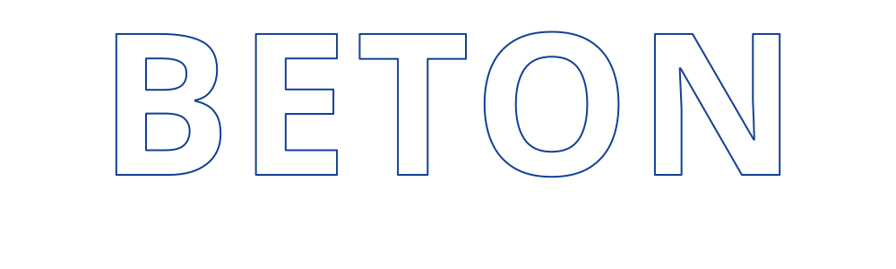

Lighting Beyond Eternity.
At Beton, we believe lighting is more than illumination - it is an essential part of architecture that shapes experiences, enhances spaces, and brings ideas to life.

At Beton, we believe lighting is more than illumination - it is an essential part of architecture that shapes experiences, enhances spaces, and brings ideas to life.